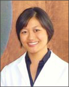
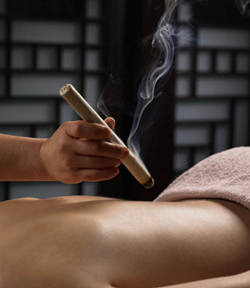

About
As a Taiwanese-American growing up in central New Jersey, Catherine was surrounded by a rich Chinese culture. Her acupuncturist mother often used Chinese herbal remedies and food therapies to cure simple ailments from common colds to PMS. Even though Catherine's life was so full of this traditional medicine from a young age, she decided to go into conventional Western Medicine during her time in undergraduate school at Rutgers University, earning a Bachelor's Degree in Cell Biology and Neuroscience and working at a major pharmaceutical company. After overcoming health issues such as a major spinal compression, a borderline cancer diagnosis, lactose intolerance, and severe eczema with acupuncture and Chinese herbal medicine, Catherine finally decided on a path of East Asian Medicine in order to fuse her knowledge of Western Conventional Medicine and East Asian Medicine.

In 2007, Catherine entered Pacific College of Oriental Medicine in Manhattan, New York City to start her (re)education. Most of the ideas that were previously taught by the Western Medicine standpoint had to be relearned from a different paradigm and her old ideas of health and diet were unearthed. Catherine finished her MSTOM degree (Master's in Science in Traditional Oriental Medicine) in a different branch of Pacific College – San Diego, California, acquainting experiences from Community and Seniors' clinics, field work with war veterans, as well as the world renown San Diego Hospice. After graduating in 2011, Catherine continued her education - first at Beijing Traditional Chinese Medicine Hospital.
Currently, Catherine is an NCCAOM Board certified, Washington State licensed acupuncturist. She also is a member of the Washington East Asian Medicine Association (WEAMA). From 2012 to 2015, Catherine apprenticed under Vincent Chiu, one of the most established Chinese medicine herbalists in the Greater Seattle area. Mr. Chiu has 50 years of experience in Chinese herbs, specializing in dermatology, fertility, gynecology, and other ailments which may be deemed as difficult to treat by Western medical standards.
With Acupuncture, Catherine is experienced in the treatment of pain, gynecology, and geriatrics with a primary interest in psychosomatic diseases such as depression, insomnia, fibromyalgia, and other diseases of this nature.
Catherine's mission is to focus on the body's ability to promote its own healing process. With the most suitable health regimen for each person, one can allow the body to prevent or fully recover from most diseases.